Mr. PinPinDesign report / 15 September 2026Skip to report
Revised analysis / historical evidence + new proposals
Mr. PinPin: test the character through a story.
Your preferred reference is the original chapter 34: soft dimensional painting, detailed quills, small hedgehogs and warm light moving through substantial rooms. This round adds G, a handcrafted miniature interpretation, alongside F across all five explored chapters, including the new Night Shift.
This revision separates what the pictures show, what I would choose, and what the chapter trials actually demonstrate.
100 original images surveyed32 original images inspected individually15 / 8 farm overview / individual review20 trial sheets / 5 chapters
The 100-image survey was a labeled contact-sheet overview, not 100 full-resolution examinations. Twenty-five unique original illustrations and six farm references are reproduced below, including the direction map. Earlier unapproved chapter-one artwork is excluded from both the evidence and the generation references. These new trials are also unapproved, and are shown only as experiments.
Round 5 / handcrafted miniature exploration
G: a tactile world, not just a softer face
Your preferred original chapter 34 remains the leading reference. G is a contrasting experiment based on original illustration 34 in chapter 1: a plush-like PinPin with a broad cream muzzle, small dark eyes, short fabric paws and a handmade setting. Illustration numbers and chapter numbers are different.
Historical material reference / image 34 / chapter 1. Not a generated trial.
What G is actually testing
Small dark eyes, fabric-like cheeks and rounded paws replace F's more animated face. Woven cloth and miniature props extend the change into the environment. The target is a photographed handmade-set appearance, not a claim that these AI-generated scenes are photographs of physical puppets.
Existing F sheets provide event and framing references; the original image supplies the material direction. F and G keep the same panel counts, but bodies, expressions, props and some framing also change. This is a comparison of complete treatments, not a single-variable experiment.
My assessment after all five chapters
Homecoming G is the clearest character match to the plush reference. Garden G carries the materials into some plants. Morning G improves the serving action but still needs distinct family identities. Flight G exposes the limits of restrained faces and tight framing. Night Shift G changes the overall style least: many surfaces still resemble F.
I would retain original chapter 34 as the primary direction. G offers a useful alternative for intimacy, but it has not yet established a consistent handmade world or an equally expressive ensemble.
Chapter 3
A, B, C, E, F and new G. Five scenes per sheet.
Chapter 28
C, F and new G. Five scenes per sheet.
Chapter 32
C, D, E, F and new G. Five scenes per sheet.
Chapter 34
C, E, F and new G. Six scenes per sheet.
Chapter 24
New random chapter: Night Shift. F and G, six scenes each. An adult ensemble test, not a young-PinPin portrait.
Six new sheets add 33 panels: 20 sheets and 106 panels across five chapters in total. All are unapproved exploration, not a replacement pagination plan. The original book and published reader remain unchanged.
Round 4 / Miguel's preferred historical direction
F: return to the original chapter 34
The preference is for the original artwork, not an approval of these generated sheets. F takes images 18,21 and 45 as direct references for fine quills, natural-looking bodies, soft volume, room scale and atmospheric light. It deliberately explores dimensional painting; the report itself stays visually flat.
C had some modeled fur, but its contour-driven animals and close staging did not fully test the original's treatment of rooms and light. F is a broader reconstruction, changing framing, scale and some proportions as well as rendering. It is not a single-variable color comparison like the intended C/E test.
Chapter 3
A, B, C, E and new F. Five scenes per sheet. F's extra boot was removed in a targeted revision.
Chapter 32
C, D, E and new F. Five scenes per sheet. Moonlit snow and a small warm candle test the style outside the house.
Chapter 34
C, E and new F. Six scenes per sheet, including the distinctly imagined scene with Lilia.
Chapter 28
New random chapter: underground garden in C and F. Five scenes per sheet.
At the end of round 4, fourteen displayed trial sheets contained 73 panels. Earlier versions remain unapproved; the unrepaired F homecoming is retained on disk but is not counted or displayed. The originals and the published reader are unchanged.
Round 3 / one new treatment across every explored chapter
E: bold expressive paint, with C as the comparison
The historical starting point is original image 74, chapter 10: energetic visible brushwork and strong color contrasts. Here E borrows that painting language while trying to keep C's animal-shaped body and scene compositions. This is a new combination of existing ingredients, not a claim that the original already uses this exact model consistently.
Chapter 3
A / crayon, B / articulated ink, C / animal-shaped, E / expressive paint added. Five scenes per sheet.
Chapter 32
C / animal-shaped, D / rounded miniature, E / expressive paint added. Five scenes per sheet.
Chapter 34
New random chapter: C / animal-shaped and E / expressive paint. Six scenes per sheet to retain the imagined cooking moment.
At the end of round 3, nine sheets contained 47 illustrated panels. These are exploration panels, not a replacement book-pagination plan. Earlier trials remain unapproved. C is used as an experimental control, not promoted to historical evidence.
Historical families / possible directions
What is already in the repositories?
These seven overlapping families organize the artwork reviewed so far. The original chapter 34 treatment is now separated explicitly, following your preference. They are not seven official characters or an exhaustive count of variations. Body shape, medium and costume can be combined. Each trial below names what it borrows and what it changes.
Original chapter 34: images 18,21 and 45.
Soft dimensional storybook / original chapter 34
Observed: Detailed fine quills, small hedgehogs in substantial wooden rooms, soft rounded volume, textured cloth and light that travels through the scene.
Preferred direction: Miguel's preferred historical direction. Preserve the dimensional surfaces, natural-looking bodies, room scale and warm/cool light relationships rather than flattening them.
Boundary: A new rendering can drift into oversized animation eyes or glossy toy surfaces. A warm color filter alone does not reproduce these originals.
F now tests this direction in chapters 3, 24, 28, 32 and 34. F is an unapproved interpretation of a preferred historical reference.
Original image 34, chapter 1; image 29, chapter 6, also has a miniature-like quality.
Tactile miniature / plush-like
Observed: Stubby paws, small dark eyes, broad soft muzzle, tactile fur and the sense of a tiny physical object.
Possible direction: G now tests the tactile finish itself: a fabric-like character in a handmade miniature world. Earlier D borrowed compactness while translating the surface into flatter paint.
Boundary: A handmade-set appearance is present historically and is deliberately explored in G. Soft fur alone is insufficient: the environment must also read as crafted, and simple faces must still support clear acting.
Flight D borrows compactness, not the photographed surface. G explores the material direction in chapters 3, 24, 28, 32 and 34.
Original image 85, chapter 7; image 87, chapter 32.
Animal-shaped / naturalistic
Observed: Pointed muzzle, low quilled oval, small eyes and four short limbs; the flight image makes the horizontal body especially clear.
Possible direction: An animal-first PinPin, using low resting and flying poses with selective upright gestures.
Boundary: Object handling must remain anatomically convincing. Flat rendering is a new translation of these dimensional references.
C now tests this family in chapters 3, 28, 32 and 34. E used C as its anatomical control in round 3; the new C/F comparison also changes framing and dimensional treatment.
Observed: Loose colored strokes and simplified forms. Image 55 is a gentle mother-and-child drawing; image 74 is a much more saturated, energetic painting. They are related possibilities, not identical techniques.
Possible direction: Either an intimate crayon treatment or a bolder, color-led painted book.
Boundary: A trial of soft crayon does not test the full expressive-color range of this family.
Homecoming A tests the softer end. E now tests the saturated, brush-led branch in chapters 3, 32 and 34, combined with C's animal-shaped anatomy.
Original image 65 and image 22, chapter 16; image 63, chapter 35, adds a clothed large-eyed figure.
Rounded expressive storybook
Observed: Rounded belly, large dark eyes, tiny paws and clearly readable emotion. The originals often use detailed, dimensional surfaces.
Possible direction: Preserve the rounded anatomy and expressive face while simplifying the surface into flat shapes.
Boundary: Too little muzzle or too much eye can make him feel like a generic mascot. The exact flatter finish is proposed, not recovered from every reference.
Flight D combines this face language with miniature-like compactness.
Original image 75 and image 68, both chapter 16.
Articulated upright storybook figure
Observed: Projecting muzzle, more visible arms and legs, clothes, and deliberate walking or pointing poses. Bare feet and shoes both occur.
Possible direction: A more active, upright PinPin with readable stepping and handling poses.
Boundary: The body can become too human-shaped. Coats and boots are separate choices, not mandatory anatomy.
Homecoming B combines this anatomy with comic contours; it is not a direct copy of image 75.
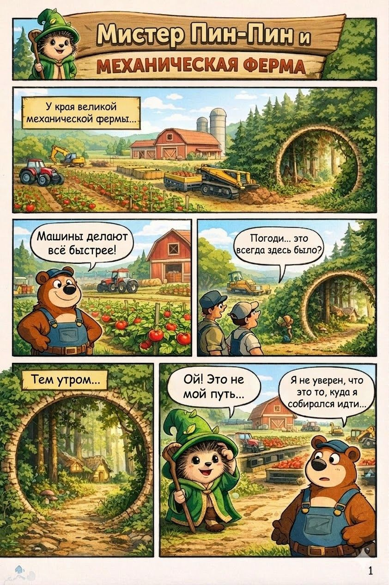
Existing farm page 01 is the clearest inked example; pages 08, 14 and 15 demonstrate gesture and sequence with more dimensional paint.
Outlined comic / sequential storytelling
Observed: Strong contours, readable faces and props, multiple sequential moments. The farm collection itself mixes rendering treatments.
Possible direction: A flatter, clearly outlined comic using whichever body family we choose.
Boundary: Comic presentation does not require the green costume or human-like legs. Those choices should not be bundled by accident.
Homecoming B borrows the contour language. The flatter Flight D is a new synthesis, not an exact farm-page match.
Green forest wizard: costume, not a separate anatomy
Original images 32 and 40 and farm pages 01, 08, 14 and 15 establish the leaf hat and green cloak. That outfit can sit over different bodies. It is not another painting style, and it is not automatically appropriate for an earlier passage.
Earlier rounds explored flatter drawing. F now deliberately tests the dimensional finish you prefer in original chapter 34. It borrows both rendering and anatomy, not just expression; that change in direction does not change the flat, scroll-first report layout.
Chapter trial / six directions
Chapter 3: Home, Sweet Home
Historical source / chapter 3 / image 55.png
The original chapter illustration: mother, a much smaller child, and carrots. Loose drawn marks, exaggerated scale, no visible boots.
Why this chapter tests the design
It was selected randomly from chapters 2-11. It is short enough to compare its whole narrative: homecoming, supper, bath, drying and bedtime.
The opening explicitly says его маленькие сапожки (his little boots); Mother then cleans them. Removing boots from this scene would contradict the text. Adding long human-like legs is not required by it.
Bathing and bedtime remove the costume. The design must still read as the same child through his face, back, paws, scale and relationship with his mother.
What stays fixed in the trials
The same five beats, child on the left, mother on the right, same domestic props, no wizard outfit, and boots at the doorway only. The full eleven source paragraphs and an English reading translation follow the visual comparison.
A, B and C are bundled directions: anatomy and drawing treatment both change. E is a more focused painting-treatment comparison against C, although generation can still cause anatomy or expression drift. This is an exploratory comparison, not a single-variable experiment. Five illustrated panels are not a new book-pagination decision.
New work / proposals, not historical evidence
Homecoming: six directions
G / Handcrafted homecoming
The same five events and comparable framing as F, translated toward the original plush figure: cream fabric, small dark eyes and stubby paws.
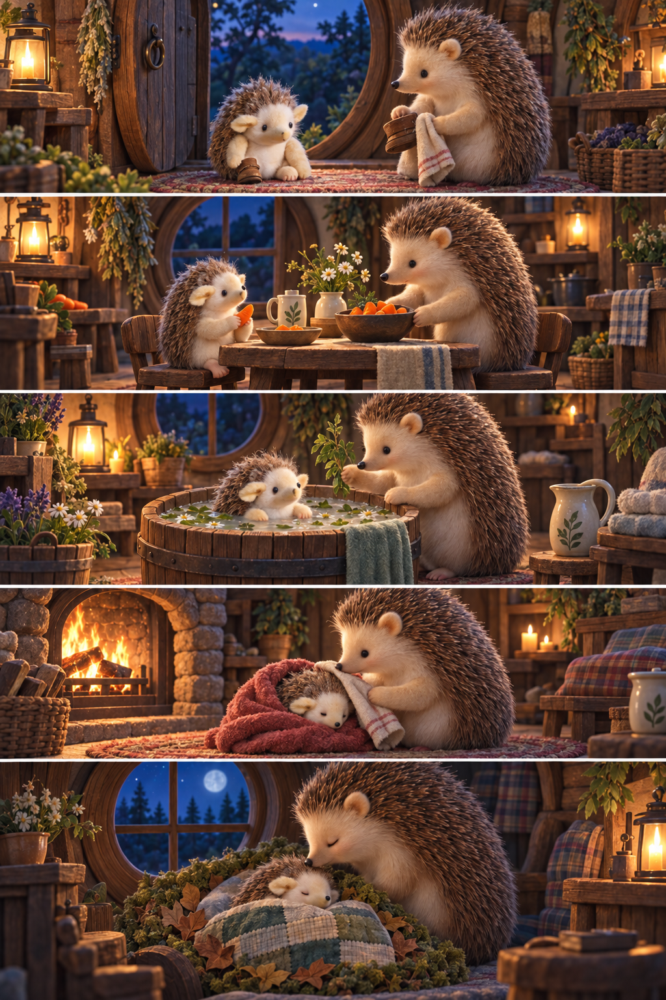
Direction G / 5 scenes / unapproved handmade-miniature interpretation
What changed: PinPin's bead-like eyes, broad fabric muzzle and rounded paws closely recall image 34. The two boots are correct in the first panel, and the towel and patchwork quilt reinforce the tactile direction.
Still unresolved: Mother still has sharper, more naturalistic quills than the child. His alert arrival does not clearly convey the prose's fatigue; the tiny face communicates less change until the final closed-eye scenes. The craft effect is stronger on PinPin than on the polished room.
F / Soft dimensional homecoming
Directly informed by original chapter 34's rooms, quills and warm light. New framing and smaller relative scale; the five events remain. The displayed revision has two boots.
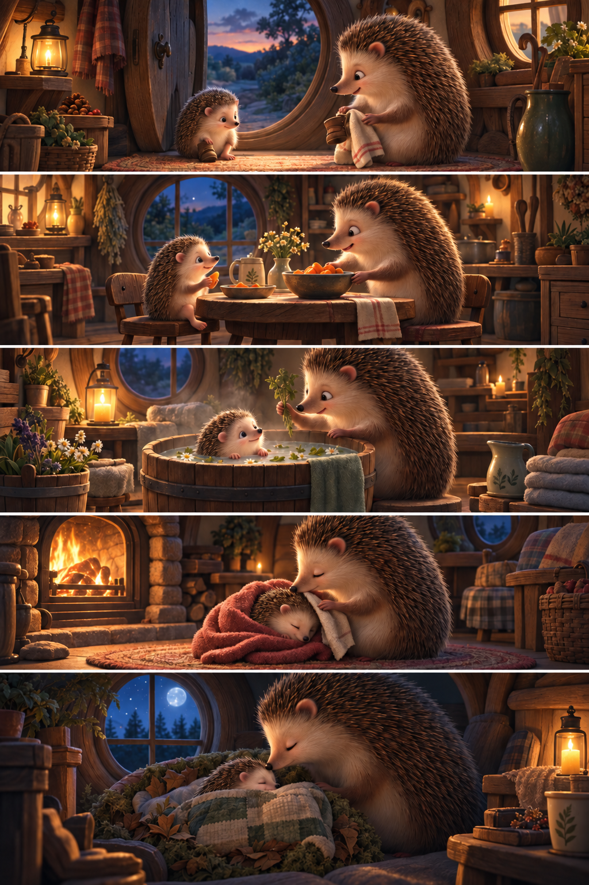
Direction F / 5 scenes / unapproved interpretation of original chapter 34
A / Rounded crayon storybook
From image 55's family intimacy and image 88's compact silhouette. Loose marks, tiny body, softer edges.
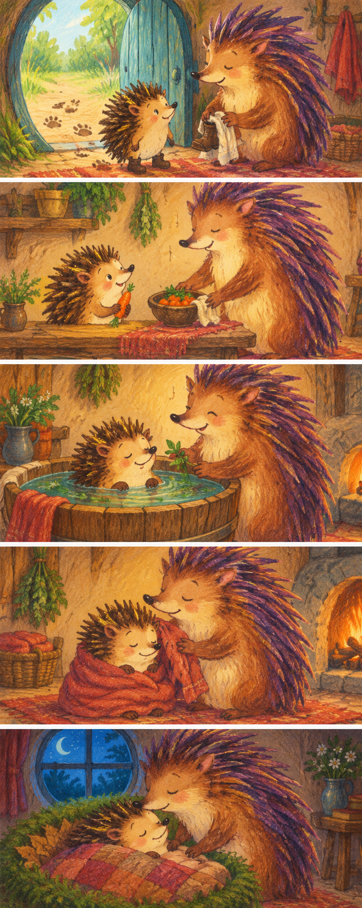
Proposal A / five scenes / built-in image_gen
Five scenes: coming home, carrots, herbal bath, drying by the fire, and a goodnight kiss. The first scene contains an extra boot.
B / Articulated ink storybook
From image 75's longer muzzle and articulated body, with the clearer contours of farm page 01. No borrowed wizard costume.
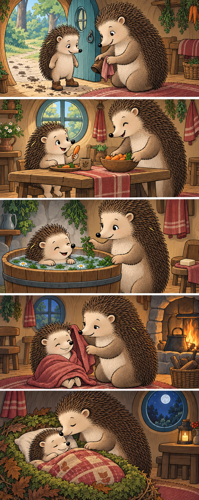
Proposal B / the same five scenes / built-in image_gen
The same chapter in a more defined ink treatment, with visible short legs and a projecting muzzle. The first scene also contains an extra boot.
C / Animal-shaped woodland
From image 85's pointed muzzle and image 87's low animal body. New painted translation, not a photographic imitation.
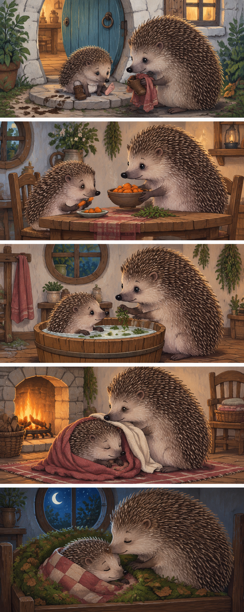
Proposal C / same five scenes / round 2
E / Bold expressive paint
C's anatomy and five compositions, repainted using image 74's stronger color relationships and broad brush marks. Added in round 3.
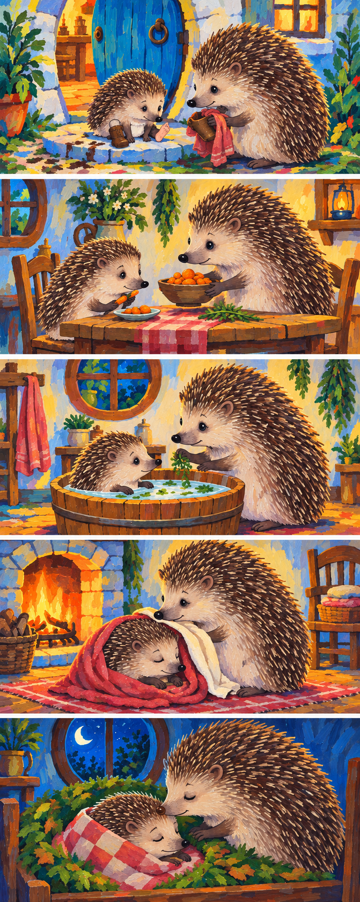
Homecoming E / five scenes / unapproved style exploration
F against the preferred originals
The wider rooms, grazing light along the quills, cloth texture and small scale beside Mother bring F closer to images 18 and 21. The blue night window and local lamplight are more restrained than E's saturated brushwork. The curled drying and sleeping poses retain an animal body.
The face and pink extremities still lean toward a polished animated character; the mother remains quite upright. Arrival is more cheerful than tired. A targeted edit removed the invented boot on the floor, leaving one worn and one held. This repair fixes a prop error, not the unresolved character proportions.
What A and B do not get right yet
Both invent a third boot. Both are too cheerful at the tired homecoming. The golden spine requested in the brief is not consistently distinguishable; a bright quill is not yet a reliable identity marker. A remains more orange-brown than intended, and B is more densely hatched than a very flat comic treatment. Neither is ready to become the production model.
What C adds, and what it still misses
The lower resting body, pointed muzzle and smaller eyes give us a genuinely different anatomy. Two boots are visible at arrival rather than the extra third boot in A and B, but the attachment and placement of the feet still deserve a close drawing check. Cut carrots better match the meal. His relaxed face is still not especially tired. The bath and table bring him upright, so this is an anthropomorphic adaptation of animal anatomy, not literal wildlife illustration.
C also retains considerable shaded fur and warm interior light. It is less flat than requested; treat its anatomy and its rendering as separate things to judge. The golden spine remains hard to track.
E compared with C
The seated arrival, carrot exchange, bath, curled towel pose and goodnight kiss remain closely matched. Broad blue and yellow strokes replace much of the gray-brown setting; the face and muzzle stay recognizably related to C. This is a stronger painting comparison than the earlier A/B anatomy comparison.
The brighter walls and quilt compete with the tiny paws and expressions. At bedtime the blue window still signals night, but the room feels more energetic than sleepy. E groups some quills into marks, yet the face retains soft modeling and dark eye highlights. It is a partial move toward flat expressive paint, not a fully flat finish. The questionable arrival foot placement is inherited from C, not resolved by repainting.
What the homecoming treatments teach us
1. Coming home
A: His tiny body and upward gaze emphasize being cared for. The cheerful smile loses some of the tiredness described in the opening.
B: The visible legs and clearer boot shape make the action legible, but make him look taller and more self-assured.
C: C's pointed face and low seated pose feel less like a human child. The clearer two-boot inventory improves continuity, but does not by itself settle foot anatomy.
A and B show two boots on his feet plus another in Mother's hands. This is a continuity error, not an approved design feature.
2. Carrots and conversation
A: The mother-to-child size contrast carries tenderness. Broad quill strokes preserve the loose drawing reference.
B: The paw holding the carrot and the mother's bowl are easier to separate. The uncovered feet under the table make boot removal explicit.
C: C keeps a long muzzle and short paws while eating, and shows cut pieces. The very upright mother is a compromise required by the domestic staging.
The chapter specifies cut carrots. Both images also include a whole carrot. That is an added visual choice, not a literal reproduction of every detail.
3. The herbal bath
A: The rounded face remains recognizable without boots or clothes. The quills form an expressive outline.
B: The more controlled muzzle, ears and paw shapes stay legible against water and herbs.
C: C's profile and quill mass distinguish him even with the lower body hidden. Smaller eyes still communicate attention, although less emphatically than B's.
All three retain a nonhuman hedgehog body and need no wizard accessories to identify the child. This does not yet prove continuity with the later farm version.
4. Drying by the fire
A: The towel and closed eyes give the clearest feeling of physical comfort. The warm orange palette becomes too uniform.
B: The face, towel and mother's paw are more clearly separated. The child still has distinct bare feet.
C: C curls low beneath the towel; this is the clearest contrast with B's seated upright figure. His mother dries the quills rather than simply presenting a towel.
This is the useful identity test: can we recognize him with nearly all of his silhouette covered? Both retain the muzzle, ears and quill line.
5. Bedtime
A: The mother's lean and the child's sleeping expression communicate the kiss without dialogue bubbles.
B: A more defined moss-and-leaf bed and stronger contour make the last action especially clear.
C: C makes a compact curled sleeping shape, with the mother's muzzle close to his forehead. Its intimacy shows that animal-like anatomy need not lose warmth.
All three add a quilt and use closely related staging. These are reasonable adaptation choices, not evidence that either visual style is uniquely correct.
My reading: A is stronger in loose-drawn tenderness; B is stronger in action clarity; C makes the animal-shaped alternative credible in domestic scenes. That is an editorial judgment about these outputs, not proof that every illustration in those families behaves this way. These homecoming sheets do not test running, complicated object handling, the later wizard outfit, or how PinPin and PomPom should differ.
Continuing chapter / four directions
Chapter 32: Flight in the Night Forest
This chapter was randomly drawn from 27 untested chapters mentioning PinPin and containing 150-500 words. That restricted pool keeps a complete short narrative manageable; this was not a draw from every chapter. The exact pool is saved with the prompts.
Historical source / image 87.png / chapter 32
The text corrects the picture
Lilia takes PinPin's paw, both rise, and a magical candle floats beside her. The original image emphasizes a floating hedgehog, a squirrel below and a face-like flame. We should not copy that composition as if every detail were the text.
C, D, E and F cover the same five beats: takeoff, wonder, floating candle, ascent to the cave, and conversation at its entrance. The earlier carrot trick is recalled by the opening, not replayed as a new event.
PinPin has no wizard costume here. Lilia's plum cloak is an adaptation choice based on the cloaked source figure, not a stated color in the prose. The safe ledge makes the cave approach readable without adding a new adventure.
G / Miniature night flight
The five F flight events with plush bodies, small dark eyes, a woven plum cloak, cool snow and one warm candle.
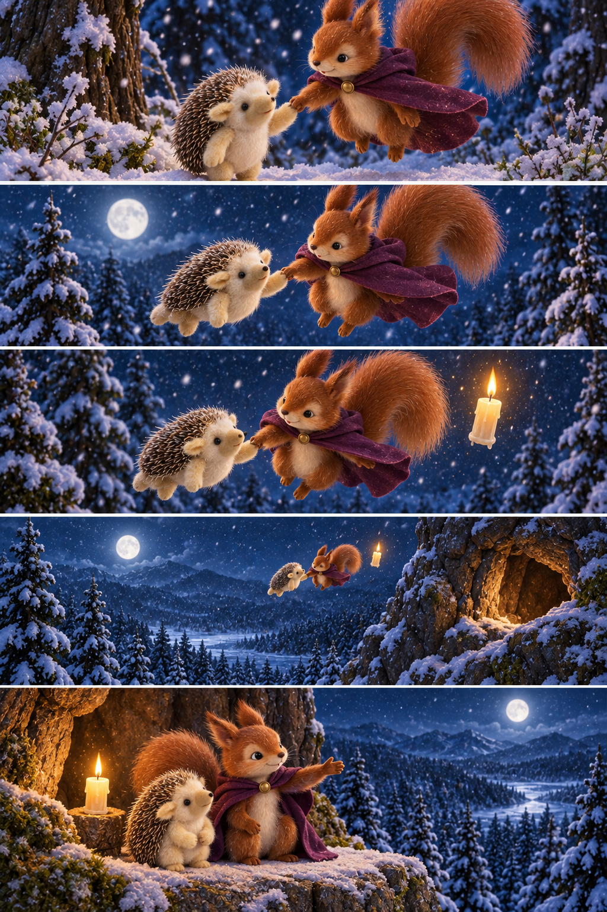
Direction G / 5 scenes / unapproved handmade-miniature interpretation
What changed: PinPin's broad muzzle and short dangling plush limbs read much more like the historical toy than F's pink-fingered, large-eyed figure. Paw contact is clearer and the takeoff sparkles are gone. The third and fourth panels retain an airborne wax candle.
Still unresolved: Lilia's ears and tail are still cropped in the opening frames despite the framing instruction. Her face retains more cartoon modeling than PinPin's. At the end the candle rests on a rock instead of remaining airborne; the quieter faces also give limited evidence of surprise changing to trust.
F / Soft dimensional flight
The preferred original 34 treatment adapted to snowy night: fine fur and quills, atmospheric depth, cool moonlight and a warm floating candle.
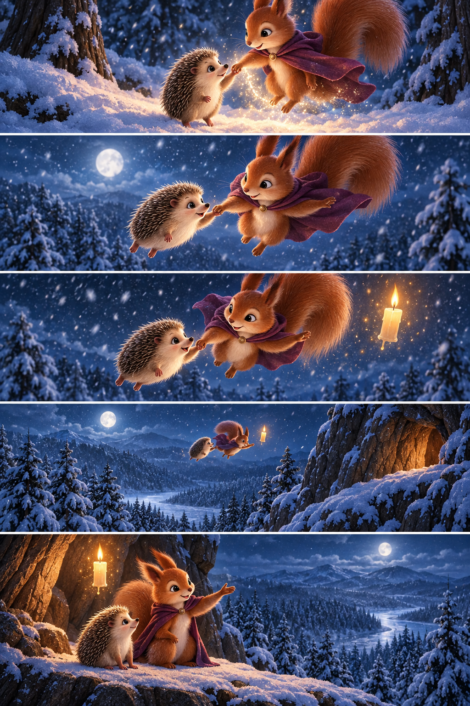
Direction F / 5 scenes / unapproved interpretation of original chapter 34
C / Animal-shaped woodland
The same family tested in homecoming C: pointed muzzle, small paws, low horizontal floating body. References: images 85 and 87.
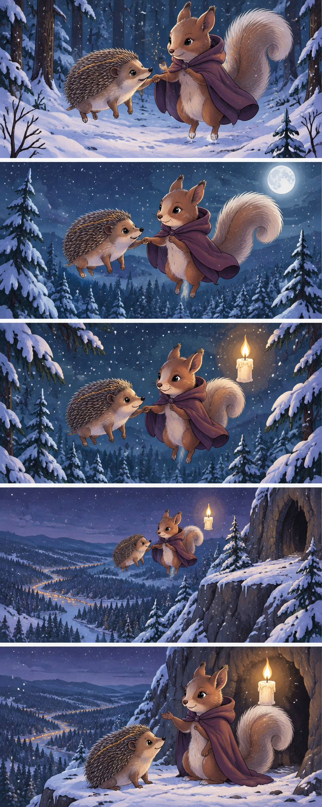
Flight C / five scenes / new proposal
D / Rounded miniature, flat translation
Compactness from image 34 and expressive oval anatomy from image 22, translated into flatter painted shapes. A new combination, not a historical exact match.
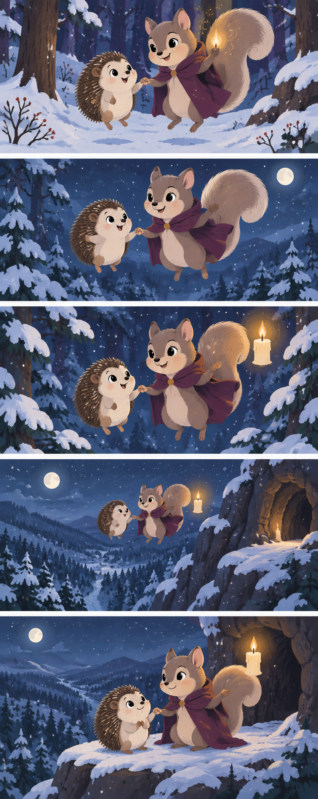
Flight D / same five scenes / round 2
E / Bold expressive paint
The animal-shaped Flight C composition and cast, repainted with strong blue snow shadows, warm light and visible brush strokes.
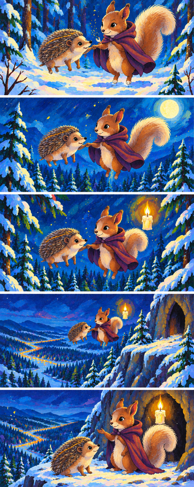
Flight E / five scenes / unapproved style exploration
F: night without the warm-room formula
The cool forest, fine quills and small candle glow give the flight a softer dimensional finish than E. Both companions visibly float, and the widening cave approach establishes their smallness in the landscape. The final scene changes the camera angle rather than copying C's composition.
PinPin and Lilia now have more animation-like eyes and smiling mouths than the most naturalistic original 34 figures. Sparkles were added around takeoff, an interpretation of the spell rather than an event stated in the prose. The first panel crops part of Lilia's head and tail at the top edge. F demonstrates the light treatment, but still needs framing and face refinement before production.
C and D: what changes when the character flies?
Takeoff
C uses a horizontal animal body with dangling paws; D keeps a compact upright oval. Both show the paw connection and both companions off the ground. C's paw overlap is less clear; D's small round hands are easier to read.
Expression
C conveys quieter wonder through posture and muzzle direction. D's large eyes and open mouth make excitement immediate, but reduce the difference between astonishment and the final contemplative moment.
Candle
Both show a recognizable wax candle in panels 3-5. D also adds a flame-like glow above Lilia's paw in panel 1; it is not needed by the passage and should not become an extra recurring prop. C has a smaller spell-like light at takeoff too.
Scale and cave
Both widen the view during ascent and return to a closer conversation at the entrance. The small figures in panel 4 are appropriate for landscape scale, but their expressions cannot be judged there at phone size.
Rendering
D comes closer to flat painted shapes. C still contains a lot of fur shading and dimensional lighting. C is a useful anatomy trial, not yet a successful strict-flat finish.
Cross-chapter identity
Homecoming C and Flight C share the pointed muzzle and quill mass, but the flight version has slightly larger, more expressive eyes. Repeating a direction has not yet locked a production model. Neither flight sheet establishes a consistently identifiable single golden spine.
The useful comparison is no longer only crayon versus ink. We can now ask whether PinPin should move like a little woodland animal or like a rounded upright storybook character. Both have historical support; neither trial is approved.
E compared with Flight C
The horizontal floating body, paw connection, widening ascent and final ledge are closely preserved. The blue-white snow against Lilia's orange fur gives the figures stronger separation. The candle reads clearly, but stronger yellow marks across the sky and landscape compete with its role as the small guiding light.
The moon and snow preserve the night setting, while the saturation makes it feel more exuberant than hushed. Lilia's fur is warmer and PinPin's quills carry more yellow marks: these changes must not be mistaken for a new golden-spine rule. Tiny face and contour changes remain, so this is not a pixel-identical anatomy experiment. C's takeoff glow and ambiguous paw overlap were carried forward.
Complete chapter text
All six source paragraphs, unchanged, with a new English reading translation. Source paragraphs 1-4 map to panels 1-4; paragraphs 5-6 share the final panel. Original mixed Latin/Cyrillic spellings are preserved.
English / paragraph 1
After Mr. PinPin demonstrated his ability to make a carrot levitate, Lilia, the magical squirrel, smiled even more broadly. She gently took his paw and, as though whispering an ancient spell, made them both rise into the air.
Russian original
После того как мистер ПинPin продемонстрировал свою способность заставить морковку левитировать, Лилия, волшебная белка, улыбнулась ему еще шире. Она осторожно взяла его лапку и, словно прошептав какое-то древнее заклинание, заставила их обоих подняться в воздух.
English / paragraph 2
Mr. PinPin was astonished. His little body floated above the ground, and a breeze rustled his quills. He felt free and light, like a bird.
Russian original
Мистер ПинPin был поражен. Его маленькое тело парило над землей, и ветерок шелестел его иголками. Он чувствовал себя свободным и легким, словно птица.
English / paragraph 3
A magical candle floated smoothly through the air beside Lilia. Its soft light illuminated the surrounding forest, making every snowflake visible in the stillness of the night. The trees shimmered with frost, their branches bending under the weight of the snow.
Russian original
Рядом с Лилией в воздухе плавно парила волшебная свеча. Ее мягкий свет освещал окружающий лес, делая каждую снежинку видимой в ночной тишине. Деревья покрывались мерцающим инеем, а их ветви тяжело наклонялись под тяжестью снега.
English / paragraph 4
Rising higher, they approached the entrance to a cave. From above, the whole forest looked like a magical realm full of mysteries and wonders.
Russian original
Поднявшись выше, они подошли к входу в пещеру. С высоты весь лес выглядел как волшебное царство, полное тайн и чудес.
English / paragraph 5
"This forest is full of magic," Lilia whispered, leading Mr. PinPin toward the cave entrance. "But only those who truly believe in wonders can see and feel it."
Russian original
"Этот лес полон магии," — прошептала Лилия, подводя мистера ПинPina к входу в пещеру. — "Но только те, кто действительно верит в чудеса, могут ее увидеть и почувствовать."
English / paragraph 6
Mr. PinPin nodded, breathing deeply of the cool night air. He understood that this moment had changed his life forever.
Russian original
Мистер ПинPin кивнул, глубоко вдыхая прохладный воздух ночи. Он понял, что этот момент изменил его жизнь навсегда.
Preferred historical chapter / C, E and new F
Chapter 34: Mr. PinPin's Early Morning
Randomly selected from 26 untested chapters that mention PinPin and contain 150-500 words. Chapters 3 and 32 were excluded, along with the paused opening chapter. The saved draw records the complete eligible pool.
This is a harder identity test: relatives look similar, the protagonist is absent in the opening scene, and he later imagines Lilia. Six panels keep the thought separate from the actual family gathering. C, E and F cover the same six narrative beats. F rebuilds the framing from the preferred originals, so it is not an exact composition match.
Original image 45 / chapter 34
The picture is crowded with relatives, including animals on the bed. The opening text specifically says PinPin is absent. The trial therefore starts with a visibly empty bed rather than copying this crowded composition.
Original image 18 / chapter 34
Useful kitchen scale and domestic relationship. It is not a precise model sheet identifying each relative. Father and son need clearer continuity in a sequential adaptation.
Original image 21 / chapter 34
The soup gathering supports the meal scene. Three cousins in the trial are a readability choice; the prose does not specify that exact number. The original's large group is not silently redefined as a three-cousin canon.
G / Handcrafted early morning
The same six reconstructed events as F, now with plush family figures, smaller eyes and tactile bedding. The original chapter remains the preferred historical reference.
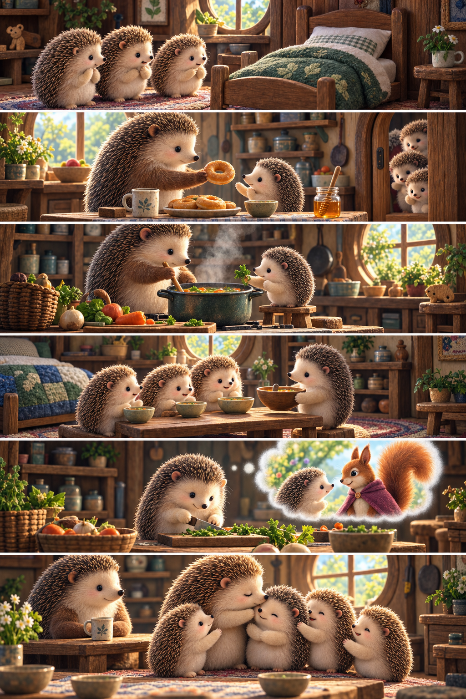
Direction G / 6 scenes / unapproved handmade-miniature interpretation
What changed: Small dark eyes and fabric cheeks reduce the animated facial look. Soup serving is clearer: one figure carries the large bowl while three cousins receive it. Lilia remains inside the thought vignette, not physically in the kitchen.
Still unresolved: PinPin's darker quill cap is not a reliable identifier in every panel, and the plush shapes still blur family identity. Mother's final touch reads near his cheek rather than distinctly at his ear. Toy animals added to the shelves are new props, not original story evidence. The quills remain more sharp and polished than the source plush.
F / Original-chapter treatment revisited
Using this chapter's actual historical images as the lighting, surface and scale references. Six reconstructed scenes, not a recoloring of C.
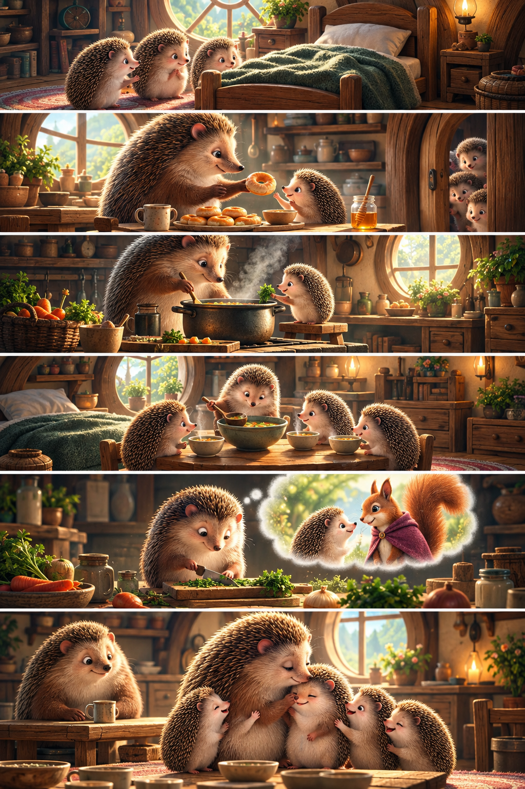
Direction F / 6 scenes / unapproved interpretation of original chapter 34
C / Animal-shaped woodland
Round 3 six-scene control, borrowing the earlier C anatomy and the original family-kitchen setting. Lilia appears only in a bounded imagined scene.
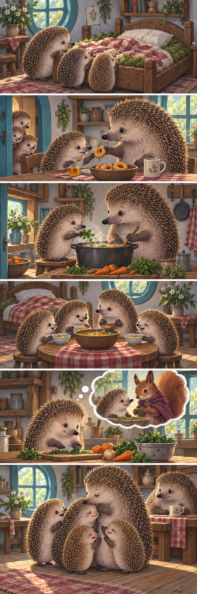
Morning C / six scenes / unapproved proposal
E / Bold expressive paint
The same six-scene C sheet repainted with the expressive color language of original image 74. Anatomy and staging are intended to stay fixed.
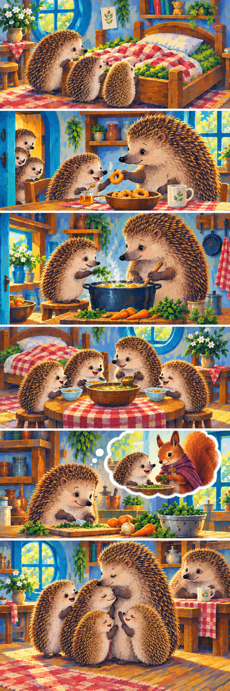
Morning E / six scenes / unapproved style exploration
F: the closest test of your preference
The curved timber, directional window light, green bedding, fine quills and softer shadows are closer to the actual originals than E's brush-led treatment. Father is larger relative to PinPin at breakfast and at the stove, echoing image 18. The soup scene keeps image 21's shared-bowl idea without treating every original relative as a separate PinPin variant.
This is still an interpretation: only three cousins are staged, faces are more animated, and the character serving soup can still be confused with relatives. The ear-touch is nearer the cheek and needs a cleaner gesture. Lilia remains inside a thought vignette, not physically present in the kitchen. Your preference for the source is clear; whether this particular F model matches it closely enough is still open.
Reading the six scenes in C and E
1. Empty bed
Both make the absence clear and keep three cousins outside the bed. Concern is rather mild in their faces. E's quilt and wall marks pull attention away from that quiet discovery.
2. Breakfast
The honey spoon, doughnut exchange and Father's cup make the action readable. In E, PinPin's mouth opens more than in C: the style change also altered expression. This is a small but real control failure.
3. Cooking
The two figures and shared pot remain closely matched. E separates the dark pot from the bright worktop, but vegetables and background brushwork compete with the small working paws. The upright tool-use pose is still anthropomorphic, despite the animal-shaped reference.
4. Sharing soup
The protagonist serves three cousins in both sheets. Their similar faces and quill silhouettes make him harder to identify without the serving action. Changing the paint alone does not solve this character-identity problem.
5. Inner thought
A white-bounded vignette separates imagined Lilia from the real kitchen. The source returns to thoughts during cooking after describing the meal; the panel is a recollection, not a second soup-making event. Her cloak and the exact vignette composition are adaptation choices.
6. Mother's greeting
The kiss, blushing face, gathered cousins and Father at the table preserve the broad event. The mother's hand is near the ear and cheek, but the exact ear gesture is not especially clear. The moment is affectionate in both; E increases energy, not necessarily tenderness.
What this new chapter reveals
In a family group, a pale muzzle and quilled oval are not enough to distinguish PinPin. We need stable individual features or clearer staging, not just a different paint treatment. E also retains soft face modeling and alters some mouths, so it is not a perfectly flat or perfectly isolated experiment.
The imagined marriage wish is retained in the source text, but no wedding is invented in the illustrations. The cousin's claim about PinPin being out of bed all night remains a character's statement, not an independently established timeline.
Complete chapter text
All twelve source paragraphs, unchanged, with an English reading translation. Panels 1 and 2 cover paragraphs 1-5; panels 3-4 share paragraph 6; panel 5 covers paragraph 7; panel 6 combines paragraphs 8-12. Mixed Latin/Cyrillic spellings and the source's narrative jump are preserved.
English / paragraph 1
As the morning sun began to filter into the room through the curtains, the cousins came in to wake Mr. PinPin. But he was not in bed. They looked at one another in surprise and with a little concern.
Russian original
Когда утренние лучи солнца начали проникать в комнату через шторы, кузены вошли, чтобы разбудить мистера PinPin. Однако его не было в постели. Они взглянули друг на друга с изумлением и слегка беспокойством.
English / paragraph 2
"Where could he be?" one of the cousins whispered.
Russian original
"Где он мог быть?" — шепотом спросила одна из кузин.
English / paragraph 3
Just then, the door leading to the kitchen slowly opened, and Father PinPin appeared with a smile. "Looking for this little rascal?" he said, pointing to Mr. PinPin, who was sitting at the table enjoying his morning breakfast.
Russian original
Только тогда дверь ведущая на кухню медленно открылась, и из-за нее появился папа PinPin с улыбкой на лице. "Ищете этого проказника?" — сказал он, указывая на мистера PinPin, который сидел за столом, наслаждаясь своим утренним завтраком.
English / paragraph 4
Mr. PinPin smiled at his relatives' surprised faces. "I just decided to start the day early," he said, swallowing a spoonful of honey. He noticed Father PinPin dipping a doughnut into a cup of hot coffee. "May I try?" he asked, pointing to the doughnut.
Russian original
Мистер PinPin улыбнулся, видя удивленные лица своих родственников. "Просто решил начать день пораньше," — сказал он, заглатывая ложку меда. Он заметил, как папа PinPin погружает пончик в чашку горячего кофе. "Могу я попробовать?" — спросил мистер PinPin, указывая на пончик.
English / paragraph 5
Father PinPin winked and handed him one. "Of course, but will you help me make breakfast for everyone in return?"
Russian original
Папа PinPin подмигнул ему и передал один. "Конечно, но взамен поможешь мне приготовить завтрак для всех?"
English / paragraph 6
Mr. PinPin agreed, and soon they were busy cooking. When the fragrant soup was ready, he poured it into a large bowl and went to his room to treat his cousins. They happily accepted their bowls, their eyes lighting up at the soup's warmth and aroma. Everyone sat together, enjoying the food and one another's company, thanks to Mr. PinPin's early start.
Russian original
Мистер PinPin согласился и вскоре они были заняты готовкой. Когда ароматный суп был готов, мистер PinPin налил его в большую миску и отправился в свою комнату, чтобы угостить кузин. Они радостно приняли тарелки, и их глаза засветились удовольствием, чувствуя тепло и аромат супа. Все сели вместе, наслаждаясь едой и компанией друг друга, благодаря раннему утру мистера PinPin.
English / paragraph 7
While Mr. PinPin chopped vegetables for the soup and added spices, his thoughts were elsewhere. He imagined Lili, the magical squirrel, standing beside him in the kitchen, smiling and watching him cook. How she would enjoy seeing me cook in the morning, getting up early like Father, he thought, smiling to himself. I would like to marry this magical squirrel!
Russian original
Пока мистер PinPin нарезал овощи для супа и добавлял специи, его мысли были заняты другим. Он представлял, как Лили, волшебная белка, стоит рядом с ним на кухне, улыбается и наблюдает, как он готовит. Как бы ей понравилось видеть, как я готовлю утром, вставая рано, как папа, — подумал он, улыбаясь про себя. Я бы хотел жениться на этой волшебной белке!
English / paragraph 8
At that moment, Mother PinPin appeared in the doorway. She stretched, rubbed her eyes, and smiled when she saw her son and his cousins at the kitchen table. "Hello, PinPin!" she yawned.
Russian original
Именно в этот момент мама PinPin появилась на пороге. Она потянулась, вытирая глаза, и улыбнулась, увидев своего сына и его кузин за кухонным столом. "Алло, PinPin!" — зевнула она.
English / paragraph 9
"Hello, Mama!" the cousins cried happily, running to hug her. They were delighted to see her awake.
Russian original
"Алло, мама!" — радостно прокричали кузены, бросившись к ней обниматься. Они были так счастливы увидеть ее проснувшейся.
English / paragraph 10
One cousin could not resist telling her, "Mr. PinPin did not sleep in his bed all night! We looked everywhere for him!"
Russian original
Один из кузенов, не удержавшись, рассказал маме: "Мистер PinPin не спал всю ночь в постели! Мы искали его везде!"
English / paragraph 11
Mother PinPin raised her eyebrows in surprise and looked at her son. Mr. PinPin blushed and chuckled. "I just decided to start the day early, Mama," he said, trying to sound innocent.
Russian original
Мама PinPin удивленно подняла брови, обратив взгляд на своего сына. Мистер PinPin покраснел и усмехнулся. "Я просто решил начать день пораньше, мама," — сказал он, пытаясь звучать невинно.
English / paragraph 12
Mother PinPin smiled. "You are always full of surprises, my little hedgehog." She took him by the ear and kissed his forehead. Everyone began to laugh, and the kitchen filled with the sounds of joy and warmth.
Russian original
Мама PinPin улыбнулась: "Ты всегда полон сюрпризов, мой маленький ёжик." Она взяла его за ухо и поцеловала его в лоб. Все вокруг начали смеяться, и кухня наполнилась звуками радости и тепла.
Round 4 chapter / C, F and new G
Chapter 28: Endless Mysteries of the Underground World
Randomly selected from 25 remaining eligible chapters mentioning PinPin and containing 150-500 words. Chapters 1,3,32 and 34 were excluded. The five source paragraphs become five scenes in each treatment.
Original image 16 / chapter 28
The plants, suspended containers and scale are useful setting evidence. Its extra squirrel is not included in the new trials because this passage follows PinPin alone.
Original image 25 / chapter 28
The original already makes the animal small under a tall glass roof. Its closed-eye pose is not evidence of a prayer or a nap; the text ends with appreciation. The source describes hanging wooden boxes filled with lettuce, not just round barrels.
G / Handcrafted garden
F's five discoveries in a miniature garden, with a soft-fabric PinPin, felt-like plants and the same circular landing as a return marker.
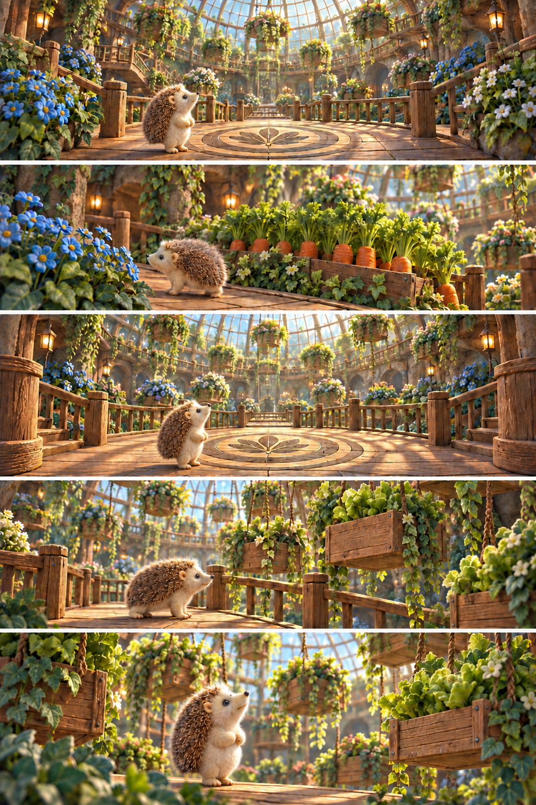
Direction G / 5 scenes / anatomy revision / awaiting review
Your feedback / four limbs only: You liked this garden treatment and identified an extra chest paw in the walking pose and a third foot under the rear quills in the upright pose. This revision removes those protrusions. Upright figures now have two supporting feet and two forepaws; walking figures have no separate arms above their front legs. The upright silhouettes are slightly taller, with the back quills above the floor. This is an anatomy correction, not a new style or automatic approval.
What changed: The entrance now frames PinPin's whole body and removes F's invented waterfall. Panel 2 faces left and panel 4 faces right, making the route clearer. Flower petals, carrots and hanging leaves acquire a made-by-hand surface.
Still unresolved: The central floor motif is still an invented continuity aid, not source evidence. The room remains grand and polished, and the far end is visible despite the prose's immense distance. The final upright pose and tiny smile are acting choices, not a discovered mystery.
F / Soft dimensional garden
Original 34's dimensional treatment applied to the garden: smaller relative body, larger environment, fine surfaces and sunlight through glass.
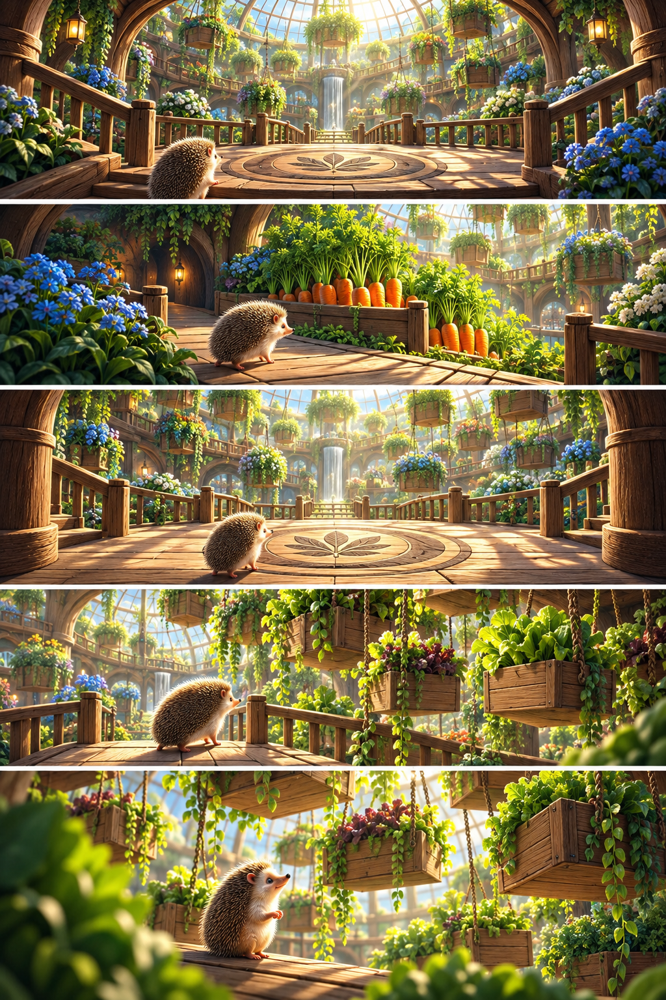
Garden F / five scenes / unapproved preferred-reference trial
C / Animal-shaped woodland
The round 4 C comparison uses the established painted animal form. The same route and plant discoveries as F, with a closer emphasis on PinPin.
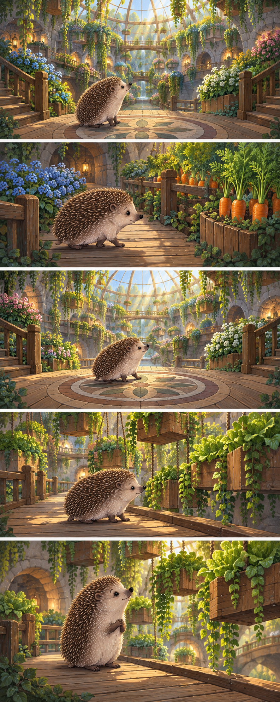
Garden C / five scenes / new comparison
Arrival
F gives the room more space and makes PinPin much smaller. C favors character inspection. F's first panel partly crops the animal at the bottom, and its visible far structures do not fully convey the text's unreachable far end.
Left and right
Both separate blue flowers and carrots from the later hanging lettuce boxes, and return to a central floor motif in between. The screen directions do not make the left-versus-right route unambiguous. The narration still carries that detail.
Central landmark
A circular floor medallion was added to make the return legible; it is not in the prose. It recurs approximately, not as a geometrically locked floor plan. The two versions use different designs.
Scale and light
F is the stronger test of the preferred source's spaciousness and dimensional light. Its fine quills and small paws are closer to an animal silhouette than its own domestic faces. Both versions still simplify the geography.
Added scenery
F invents a central waterfall. It helps its composition but is not stated in the source and should be removed in a literal adaptation. Both add architecture and furniture details; neither adds another living character.
Ending
Both end with quiet attention to the hanging plants, without discovering the source of the magic. C's clasped paws and F's lifted paw are acting choices, not additional plot events.
F uses wider individual panels than C, as well as a different camera distance. This comparison tests the whole treatment of space, anatomy and rendering. It is not a controlled paint-only comparison.
Complete chapter text
Five original paragraphs, unchanged, each mapped to the corresponding panel; English reading translation alongside. Mixed source spellings are retained.
English / paragraph 1
The next morning, when Mr. PinPin went down into the underground chamber again, he was astonished by its grandeur. The space was so vast that the first rays of morning sunlight, entering through the glass ceiling, scattered inside, and he could not see the far end.
Russian original
На следующее утро, когда мистер ПинПин снова спустился в подземелье, он был поражён его величием. Пространство было настолько огромным, что когда первые лучи утреннего света проникали через стеклянный потолок, они рассеивались внутри, и было невозможно увидеть дальний конец.
English / paragraph 2
Carefully, step by step, he headed left, each footstep echoing from the walls. As he went, he discovered many blue flowers growing out of dark corners. Beside them, bright orange carrots stretched toward the light, their green tops reaching toward the ceiling.
Russian original
Осторожно, шаг за шагом, он направился влево, каждый его шаг эхом отражаясь от стен. По мере продвижения, он обнаружил множество синих цветов, которые росли из тёмных уголков. Рядом с ними, ярко-оранжевые моркови простиралась к свету, их зелёные верхушки тянулись к потолку.
English / paragraph 3
After a long time, when it felt as though he had walked miles, Mr. PinPin decided to return to the center. He turned and retraced his path, guided by the soft light entering through the ceiling. Every step back felt long, as he kept marveling at the beauty of the place.
Russian original
После долгого времени, казалось, что он прошёл мили, мистер ПинПin решил вернуться к центру. Он повернулся и последовал обратным путем, ориентируясь на мягкий свет, который проникал сквозь потолок. Каждый шаг обратно казался долгим, так как он снова и снова удивлялся красоте этого места.
English / paragraph 4
When he reached the center, he stopped for a moment, took a deep breath to compose himself, and then headed in the opposite direction. Going right now, he discovered many suspended wooden boxes filled with lettuce leaves. They hung at different heights, creating green cascades that shimmered in the sunlight.
Russian original
Дошед до центра, он остановился на мгновение, вздохнул глубоко, пытаясь взять себя в руки, и потом направился в противоположную сторону. Теперь, идя направо, он обнаружил множество подвешенных деревянных ящиков, полных листьев салата. Они висели на разных уровнях, создавая зелёные каскады, которые мерцали под лучами света.
English / paragraph 5
Mr. PinPin was delighted by the place; every new discovery seemed a wonder. He wondered what magic or mystery might lie behind it all, but in the end he decided simply to enjoy the moment and the beauty around him.
Russian original
Мистер ПинПin был в восторге от этого места, каждое новое открытие казалось ему чудом. Он задумался о том, какое волшебство или тайна может стоять за всем этим, но, в конце концов, он решил просто насладиться моментом и красотой вокруг.
New random chapter / preferred-reference F and miniature G
Chapter 24: Night Shift
Randomly drawn from the 24 remaining chapters in the previous eligible pool, excluding the four already explored chapters and chapter 1. This passage follows Father PinPin and adult hedgehog and squirrel crews building the winter refuge. It does not put young Mr. PinPin to work.
This chapter has no original illustrations. Its six Russian paragraphs supply the events. F borrows the historical chapter 34 treatment; G borrows illustration 34's plush material and uses the new F sheet for comparable staging. Neither generated sheet is historical evidence.
G / Handcrafted night shift
The six construction events interpreted as a miniature set: softer small eyes and muzzles, toy-scale tools, timber and reflective optical props.
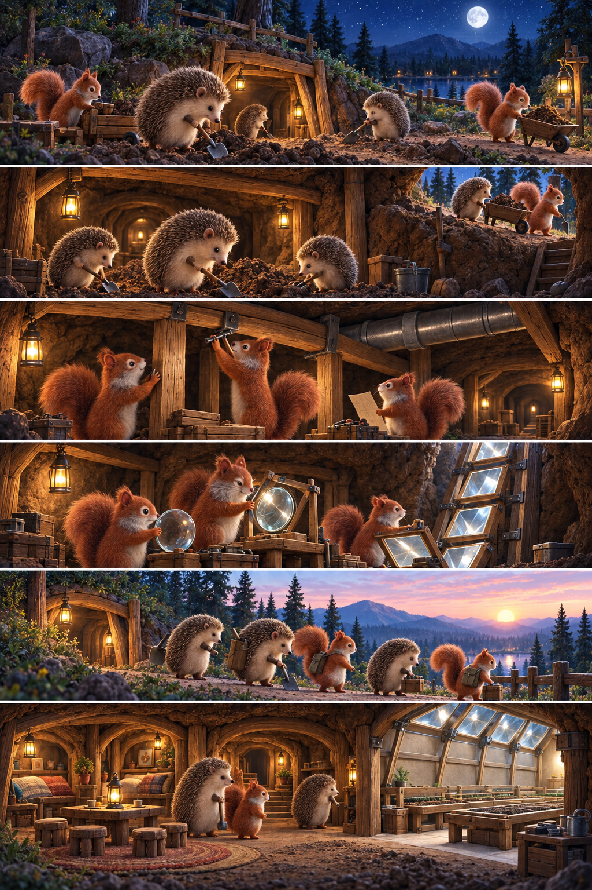
Night Shift G / six scenes / unapproved
F / Dimensional night shift
The same six events in the preferred-reference dimensional treatment, with layered earth chambers, modeled fur and cool night against local warm light.
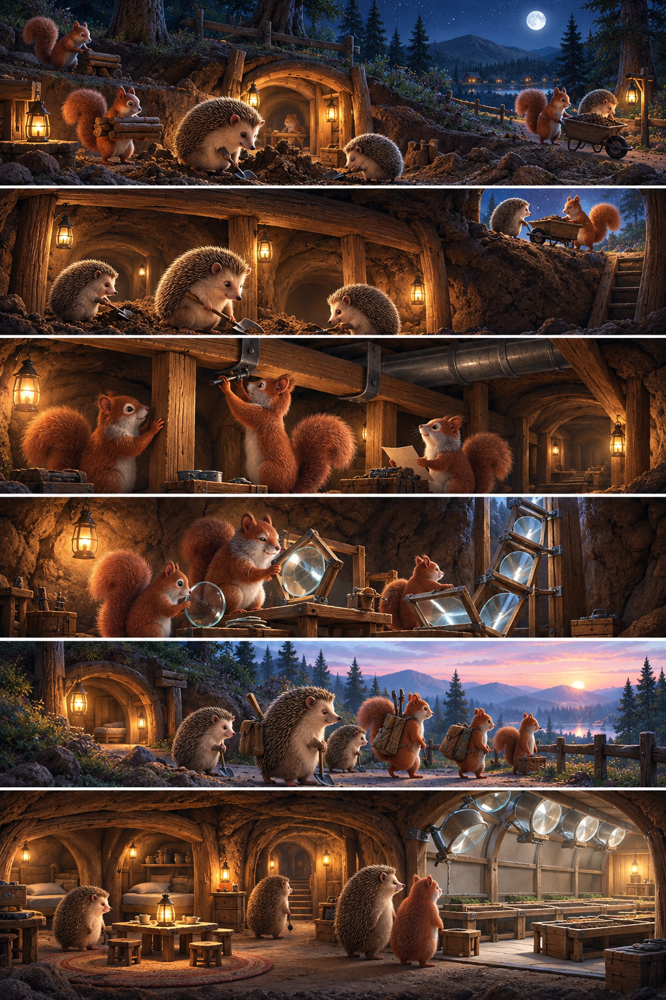
Night Shift F / six scenes / unapproved
1 / Night work
Both establish the entrance, soil handling and a moonlit forest. G gives the wheelbarrow a clearer single pusher; F puts a figure immediately behind the load, making its action less obvious. Neither establishes the heavy equipment mentioned in the prose clearly: mostly small hand tools are visible.
2 / Excavation
Father and two hedgehogs excavate below while soil is moved on the surface. The linked spaces are readable. But the workers around Father look substantially smaller; despite the adult-only brief, their ages remain visually ambiguous. They must not be silently identified as young PinPin.
3 / Engineering
Both show squirrels at a timber joint with a ventilation duct. Paws can handle tools, but the upright arms move toward human-like anatomy. Paper plans, metal brackets, ducts and lanterns are staging choices, not specified object designs from the text.
4 / Secret optics
Round lenses and rectangular mirrors make the secret system readable. G adds especially bright star-like highlights. The arrangements are illustrative, not a verified optical design, and the bright reflections should not be read as an already operating sunlight system during the night.
5 / Dawn
The pink horizon and departing crews convey the end of a shift. Both keep tools with the workers, rather than setting all of them down as the prompt suggested; the source simply says they go to rest. Satisfaction reads more clearly than fatigue.
6 / Later home
Furnished rooms and mostly empty growing trays represent gradual progress, not overnight completion. Both give the growing room a large visible opening and spectators, weakening the text's restricted-secret feeling. A future version should separate that room more clearly.
Style result
G makes the faces quieter and introduces toy-like details, but much of the fur, rocks and timber remains close to F. It does not yet prove a consistent handmade-set style across an adult ensemble. Neither sheet establishes reliable age or individual recognition.
Complete chapter text
All six source paragraphs are retained verbatim. Each maps to one panel; the final panel is a later-time summary. English is a new reading translation. The source's mixed PinPin spelling is preserved.
English / paragraph 1
As night fell over the forest, most of its inhabitants went to sleep. For the hedgehogs and squirrels, however, this was an especially active time. In the darkness, lit only by the pale moon and stars, heavy equipment rumbled and voices called out instructions.
Russian original
Когда ночь опускалась на лес, большинство его обитателей отправлялись ко сну. Однако для ежей и белок этот момент дня становился особенно активным. В темноте, освещенной лишь бледным светом луны и звезд, звучали шум тяжелого оборудования и голоса, дающие указания.
English / paragraph 2
Father PinPin and his team of hedgehogs worked hard, removing earth and shaping the chambers and corridors of the new refuge. On the surface, other hedgehogs and squirrels loaded the soil into wheelbarrows and carried it away to make room for more work.
Russian original
Папа PinPin, вместе со своей командой ежей, работал в упор, извлекая грунт и формируя камеры и коридоры нового убежища. На поверхности, другие ежи и белки загружали грунт в тачки и перевозили его в сторону, чтобы освободить место для новых работ.
English / paragraph 3
The squirrels were responsible for the project's engineering and technical work. They installed support beams, provided ventilation, and checked the refuge's structural integrity.
Russian original
Белки, в свою очередь, были ответственными за инженерные и технические аспекты проекта. Они устанавливали подпорные балки, обеспечивали вентиляцию и контролировали структурную целостность убежища.
English / paragraph 4
While most were absorbed in their work, Elder Nut and his secret squirrel team continued their nighttime mission. Under cover of darkness, they installed a complex system of lenses and mirrors that would later direct light onto the plants underground.
Russian original
В то время как большинство было поглощено работой, Старший Орешек и его секретная команда белок продолжали свою ночную миссию. Под покровом темноты они внедряли сложную систему линз и зеркал, которая впоследствии позволила бы направлять свет на растения в подземелье.
English / paragraph 5
Each night, as dawn began to brighten the horizon, both teams, tired but pleased with their progress, went off to rest. They knew every hour of hard work brought them closer to a safe, cozy underground home for the whole community in case of a long, harsh winter.
Russian original
Каждая ночь, когда рассвет начинал освещать горизонт, оба коллектива, уставшие, но довольные своими достижениями, уходили отдыхать. Они знали, что каждый час их усердной работы приближает их к созданию безопасного и уютного дома под землей для всего сообщества на случай долгой и суровой зимы.
English / paragraph 6
Over time, the combined efforts of hedgehogs and squirrels began to create a whole cozy home underground: snug family chambers, places to rest, and unusual sunlit rooms for growing plants, although that last secret was still known to only a few.
Russian original
Так, со временем, благодаря объединенным усилиям ежей и белок, под землей начал формироваться целый уютный дом. Уютные камеры для семей, места для отдыха и уникальные солнечные комнаты для выращивания растений, хотя этот последний секрет пока был известен лишь немногим.
Historical evidence / the wider review
What changed my mind
The useful distinctions are body shape (low animal, compact upright, articulated upright), rendering (plush-like, naturalistic, painterly, dimensional, inked), costume and character identity. They overlap. Counting them as four or six exclusive character versions would give a false sense of precision.
The following six evidence groups are arguments, not a claim that there are exactly six variants.
Evidence group 1
Softness is not one fixed anatomy
The early pictures include both a plush miniature and freely drawn shapes. The common strength is intimacy, not a single eye size, muzzle length, or technique.
A plush-like opening / chapter 1 / image 34.png
The small dark eyes, broad pale muzzle, stubby limbs and tactile fur make this read as a little toy. This is evidence for compactness, not for large cartoon eyes.
The actual chapter-three illustration / chapter 3 / image 55.png
Mother has a long upright torso and pointed muzzle; the child is a tiny rounded figure beside carrots. Their size contrast and affection matter more here than literal proportions. Neither figure visibly wears boots, despite boots in the text.
A painted oval / chapter 4 / image 88.png
The belly and quill halo nearly make one round silhouette, with paws tucked against it. This is a different drawing language from image 34, even though both are compact.
Evidence group 2
Animal anatomy remains a real alternative
Naturalistic pictures should not be dismissed as incapable of emotion. They express through posture, proximity and environment, while giving less room to exaggerated facial acting.
Low to the ground / chapter 7 / image 85.png
The pair has pointed muzzles and low quilled backs; limbs are largely concealed. This is useful animal anatomy, but a group picture is not a reliable individual model sheet.
A miniature with a yellow back / chapter 6 / image 29.png
Two small figures share a bowl; one has a striking yellow quilled back. That does not establish a rule that PinPin always has a wholly golden back, or identify which figure is him.
Four-legged during magic / chapter 32 / image 87.png
The floating hedgehog has a horizontal torso and four dangling legs. A genuinely animal-shaped body exists even in a magical scene. Upright posture is not universal.
Evidence group 3
The strongest counterexample is inside chapter 16
These are three pictures associated with the same snowy journey, not a child-to-adult timeline. Clothing, hands, feet and proportions change together. My earlier claim that one compact body was the established answer was too strong.
Tiny bare paws / chapter 16 / image 22.png
The upright oval has almost no neck, very short arms and tiny bare feet. Its large dark eyes and recognizable muzzle make small gestures readable.
Visible legs and shoes / chapter 16 / image 75.png
A longer muzzle, coat, scarf, more articulated arms and a visible stepping leg give this PinPin a different silhouette. Brown footwear is already in the original, not just the farm adaptation.
Coat with bare feet / chapter 16 / image 68.png
This action pose combines an open coat, a rounded belly, finger-like paws and a long raised bare foot. Clothes do not imply boots, and action does not preserve the other pictures' proportions.
Evidence group 4
Rendering and costume are separate decisions
Calling everything 'storybook' hides important differences. A painterly animal, a dressed dimensional character and a flatter comic figure can share a story without sharing a design system.
The orange pointed face, vivid blue-green forest and long stepping legs differ sharply from the pale rounded figures. The original includes expressive color and visible legs, too.
Tailored clothing, compact body / chapter 35 / image 50.png
A waistcoat, sleeves and bow tie sit on a rounded body with bare clawed feet. Because this is a family-context image, I do not assume it is a definitive PinPin portrait.
The large eyes, swept forehead quills, waistcoat and cloak produce a more youthful, humanoid impression. Facial proportions change as well as clothing. Its table hides the feet, so it proves nothing about footwear.
Evidence group 5
The wizard is recognizable, but continuity is not solved
The later green outfit is a strong identity cue. It must not conceal a different face or body each time. The original's family groups also require care about which hedgehog is the protagonist.
Several plate-carrying hedgehogs have clothes and visible little bare feet. They cannot all be treated as different portraits of PinPin.
Size is relational / chapter 38 / image 1.png
The tiny recipient of a leafy hat is surrounded by larger figures. His smallness is communicated through the relationship, not just a numerical body ratio.
The leaf-hatted wizard / chapter 38 / image 32.png
The long green cloak and large pointed hat conceal much of the body. Small brown paws appear at the hem. This supports the costume, not a complete underlying anatomy specification.
A different face under the hat / chapter 38 / image 40.png
At breakfast, the smiling muzzle and cheeks look fuller than in image 32. Same costume family, still variation in the face. The table conceals the lower body.
Evidence group 6
Some apparent variants are not PinPin evidence
Subject identification comes before character design. A mentor, a bird or an uncertain group cannot silently be counted as another version of the hero.
A mentor-context figure / chapter 2 / image 58.png
Chapter 2 concerns the elder Master Shipostav. Glasses, a hat and a pale beard-like face belong to that context; they are not evidence that PinPin normally wears spectacles.
An owl-like ambiguity / chapter 2 / image 96.png
Also in chapter 2, this figure has round glasses, a beard-like face and an owl-like appearance. The prose describes an elder hedgehog, but the image is ambiguous. I would flag the mismatch, not turn it into a PinPin variant.
Setting, not a portrait / chapter 15 / image 69.png
The most prominent subject is a black bird beside a chair and table. The picture informs the domestic setting, not PinPin's muzzle or feet.
Another uncertain elder-like figure / chapter 15 / image 92.png
The large quilled figure wears a coat and has bare feet, alongside two birds. The chapter's departure scene does not justify confidently treating that large figure as the young hero.
The existing farm storyboard
What survives across six very different moments
The leaf hat, green coat, pale muzzle and small size beside the bear are more stable than the rendering. The pages move between flatter ink drawing and soft dimensional paint. They are valuable references, but not a perfectly consistent model sheet.
Graphic comic language / existing farm page 01
Clear contours and a pale expressive face stay readable under the leaf hat. This is a useful flat-drawing reference; the costume is later-story evidence, not chapter-three clothing.
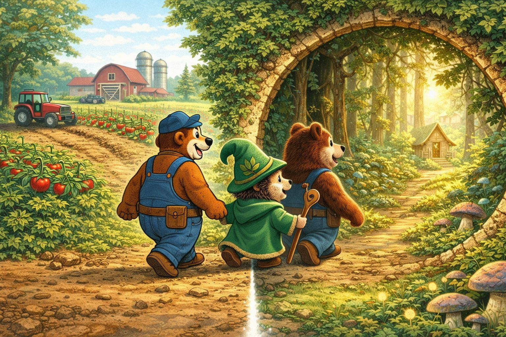
Walking silhouette / existing farm page 02
Visible brown soles and almost no exposed shin sit under the cloak. Two bear figures also appear, so this page should not be copied as a reliable cast-composition model.
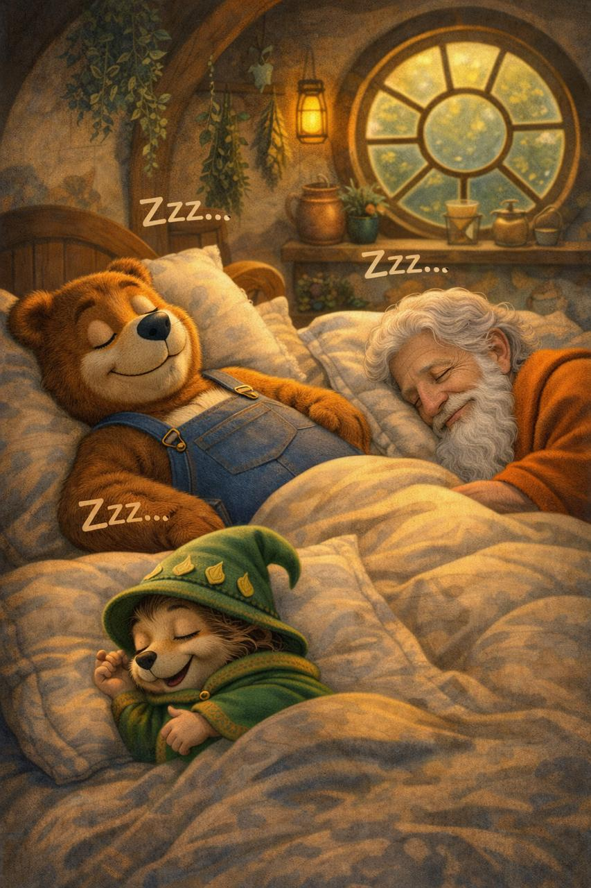
A quiet expression / existing farm page 06
Eyes shut, muzzle relaxed, one little paw beside the face: the farm character works in a domestic scene, not only in action. Bedding hides the legs.
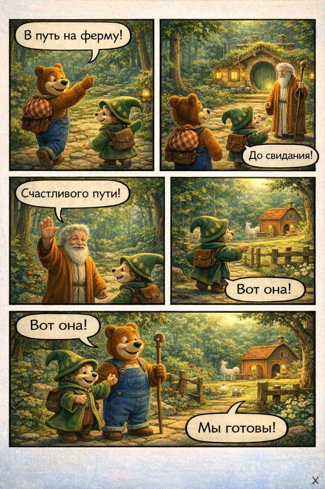
Small boots already exist / existing farm page 08
The walking panels show brown footwear and a short body beneath the coat. Boots are historical. Their scale and frequency remain design choices.
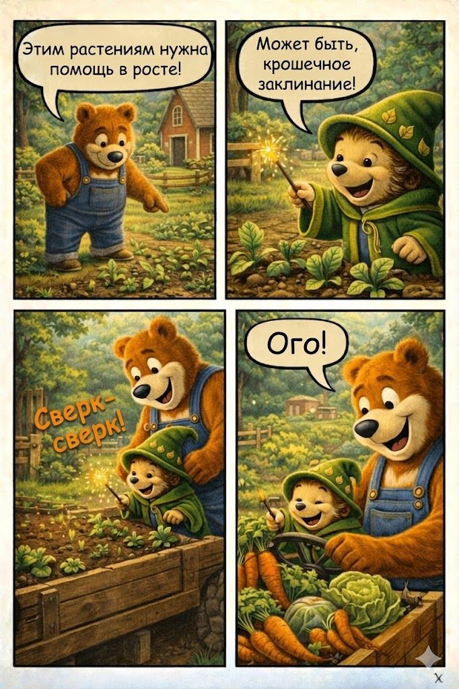
Gesture and prop handling / existing farm page 14
The little hand holding the wand, open mouth and strong eye direction make a complicated action easy to read. The crop gives little evidence about feet.
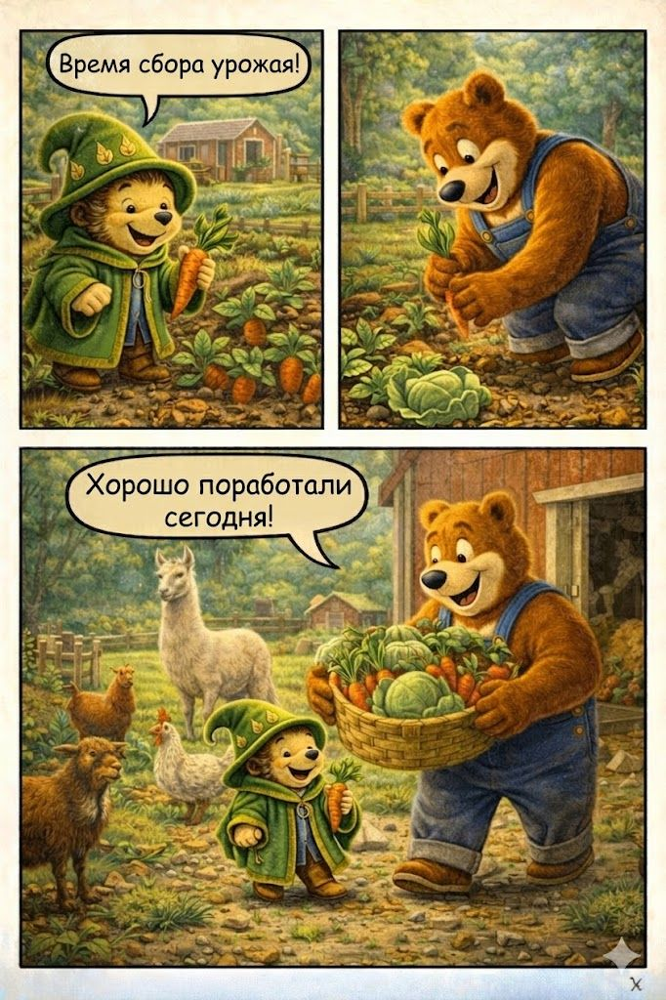
Relative scale / existing farm page 15
PinPin remains much smaller than the bear, including in the full-body harvest panel. Brown boots appear without making long exposed legs the dominant feature.
Revised recommendation / conditional, not canonical
A clear identity, with room to act.
The leading reference is now your preferred original chapter 34, rather than my earlier preference for a compact upright model. A and B remain useful alternatives, but C shows that an animal-shaped body can also carry tenderness. Flight D demonstrates a flatter rounded alternative. F should be refined against images 18 and 21: smaller, more natural eyes where appropriate; compact animal anatomy; clear individual recognition; fine quills; and light that gives the environment depth without hiding the action. C and the earlier trials remain comparisons, not equally preferred endpoints. The current F sheets have not yet been approved.
Supported by sources
A dark nose, quilled back, small scale, expressive interaction and, later, a green leaf-hatted wizard identity. Boots have explicit support in chapter 3, original image 75 and the farm pages. There is no evidence-based reason to prohibit them.
My design choice
Keep the muzzle recognizable but not extremely long; no visible neck; short limbs that can actually hold a carrot and walk. Preserve the child-to-mother relationship through consistent relative size. These are choices for continuity, not recovered immutable rules.
Footwear rule
Two tiny boots at arrival; remove them before supper and the bath. Never add a long shin merely to fit a boot. A neutral barefoot reference is useful for checking anatomy, not a ban on narrative footwear.
Limb-count rule
Exactly four limbs: two forelimbs and two hind limbs. Hands are the front paws, never an extra pair. When upright, only two hind feet touch the floor; when walking, no separate arms hang above four legs. Check every panel close up for duplicate paws, rear stumps and ambiguous limb-like tufts. Do not rely on the generation prompt alone.
Painting rule
For the preferred F direction, retain soft dimensional volume, fine quills and atmospheric light as in original chapter 34. Keep the palette varied and characters readable; avoid overly glossy animation eyes. Flat drawing remains an earlier explored alternative, not a requirement for this artwork.
Costume rule
Do not import the farm outfit into this early domestic chapter. The final chapter explicitly introduces magical gifts, but earlier green-clothed artwork exists too. A continuous costume timeline must be checked against each passage, not inferred from color alone.
Golden spine
Chapter 2 says the golden spine has been with him since birth. It should be a single identifiable hedgehog spine if adopted as a visual marker, not a feather or a fully yellow back. None of the twenty displayed trial sheets has established its consistent placement. E's yellow quill strokes make the distinction between a golden spine and general highlights even less reliable.
Still unresolved
Exact eye shape, muzzle length, quill silhouette, how much visible leg is acceptable, and how the brothers differ. These sources and twenty trial sheets do not establish a definitive PomPom model.
Observed timings / round 5 and the anatomy correction
How quickly did the images arrive?
Six sequential generation calls produced six sheets with 33 panels in about 9 minutes 8 seconds of combined tool wait: approximately 1 minute 31 seconds per sheet, or 3.62 panels per minute of tool wait. The panels were generated together on sheets, not through 33 separate calls.
The garden anatomy correction required four edit attempts and about 3 minutes 29 seconds, yielding one selected replacement sheet. Failed attempts count toward that time; the correction adds no new story panels.
These are approximate observed tool wall times, not server inference measurements or end-to-end delivery times. They exclude prompting, inspection, report writing, verification and feedback. Earlier rounds are not timed here. This small sample is not a promise of future speed. Individual timing samples and calculation limits.
The useful decision now
The useful comparison is now F's dimensional storybook presence versus G's tactile, quieter character. Homecoming best tests tenderness; Morning tests family recognition; Flight tests acting; the garden tests materials at scale; Night Shift tests an adult ensemble. I still favor your original chapter 34 reference as the main direction. G has useful qualities, but has not yet earned a wholesale change of style.
This round follows your rule: G was added to chapters 3, 28, 32 and 34, plus the new chapter 24 in F and G. Any next new treatment should cover all five explored chapters and add one more chapter. A preference for a historical reference does not automatically approve a generated model.
Chapter text / complete, not an excerpt
Home, Sweet Home: the words behind the panels
All eleven original Russian paragraphs are retained verbatim below, paired with a new English reading translation. The awkward source phrase about needing strength tomorrow is rendered idiomatically in English; the Russian has not been edited. The earlier mentor visit is recounted in dialogue, not added as a sixth illustrated scene.
1. Coming home
English reading translation
Mr. PinPin headed home, his little boots leaving tiny prints in the soft forest soil. His visit to Master Shipostav had been enlightening, and the weight of knowledge made his steps heavy. But as he approached his cozy home, a familiar aroma filled him with warmth and anticipation.
"How was your day?" his mother asked, wiping Mr. PinPin's boots with a soft cloth. Her gentle touch sent little clouds of dust dancing in the evening sunlight.
"It was... enlightening, Mama," Mr. PinPin replied, his voice full of awe and tiredness. He told her about his adventure, describing Master Shipostav's shining quills and the wise words he had shared.
Russian original
Мистер ПинПин направился домой, его маленькие сапожки оставляли крошечные отпечатки на мягкой лесной почве. Посещение Мастера Шипостава было просветляющим, и вес знаний делал его шаги тяжёлыми. Но, приближаясь к своему уютному жилищу, он почувствовал знакомый аромат, который наполнил его теплом и предвкушением.
"Как прошёл день?" - спросила мама, протирая сапожки мистера ПинПина мягкой тряпкой, её нежное прикосновение вызывало маленькие клубочки пыли, танцующие на вечернем солнце.
"Это было... просветляюще, мама," ответил мистер ПинПин, в его голосе звучали трепет и усталость. Он рассказал о своем приключении, описывая сверкающие шипы Мастера Шипостава и переданные ему мудрые слова.
2. Carrots and conversation
English reading translation
His mother nodded, her eyes shining with pride. "Every day is a step toward discovering who you truly are," she said, placing a bowl of freshly cut carrots before him. Their orange color contrasted beautifully with the deep brown of the wooden table.
As Mr. PinPin ate, his mother hummed a melody, filling their home with soft notes. "Eat up; you will need your strength tomorrow."
Russian original
Мама кивнула, глаза её сверкали гордостью. "Каждый день - шаг к открытию того, кем ты на самом деле являешься", - сказала она, ставя перед ним миску со свежесрезанными морковками. Оранжевые оттенки моркови красиво контрастировали с глубоким коричневым цветом деревянного стола.
Пока мистер ПинПин перекусывал, мама напевала мелодию, наполняя их дом мягкими нотами. "Поешь, ты понадобишься своими силами на завтра."
3. The herbal bath
English reading translation
After supper, his mother prepared a warm bath for Mr. PinPin. The water was infused with forest herbs and gave off a soothing scent. He sighed with pleasure as he sank into it and let his tiredness slip away.
Russian original
После ужина мама приготовила для мистера ПинПина теплую ванну. Вода была настоена на лесных травах, излучая успокаивающий аромат. Мистер ПинПин вздохнул от удовольствия, погружаясь в воду, и позволяя усталости уйти.
4. Drying by the fire
English reading translation
Wrapped in a soft towel, Mr. PinPin sat by the fire while his mother gently dried his quills, which glimmered in its warmth. The crackle of the fire and the rhythm of her singing filled their home.
Russian original
Обёрнувшись в мягкое полотенце, мистер ПинПин сидел у костра, пока мама нежно вытирала его шипы, от тепла огня они сверкали. В их доме звучали треск огня и ритмичное пение мамы.
5. Bedtime
English reading translation
"Time for bed, my little explorer," his mother whispered, settling Mr. PinPin into his bed of soft moss lined with dry leaves. She kissed his forehead.
Mr. PinPin's eyelids grew heavy as he nestled into bed. "Good night, Mama," he whispered.
"Good night, my dear. Dream of wonders," his mother replied. Her soft voice soon blended with the gentle whispers of the night.
As the world outside their home settled into nighttime calm, Mr. PinPin slowly drifted into dreams, his heart full and ready for the next day's adventures.
Russian original
"Пора спать, мой маленький исследователь", - прошептала мама, укладывая мистера ПинПина в его постель из мягкого мха и выстиланную сухими листьями. Она поцеловала его в лобик.
Веки мистера ПинПина стали тяжёлыми, и он уютно устроился в своей постели. "Спокойной ночи, мама", - прошептал он.
"Спокойной ночи, мой милый. Мечтай о чудесах", - ответила мама, её голос был мягким, и вскоре слился с гармоничными шептами ночи.
Пока мир за пределами их дома погрузился в ночное спокойствие, внутри мистер ПинПин медленно уходил в мир снов, его сердце было полно и готово к новым приключениям следующего дня.